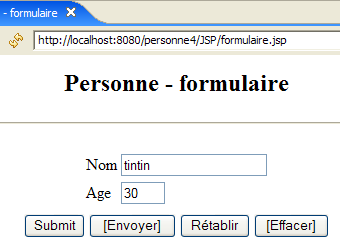

9. MVC Web Application [person] – Version 4
This version uses the JSTL tag library presented earlier.
9.1. The Eclipse project
To create the Eclipse project [mvc-personne-04] for the web application [/personne4], duplicate the [mvc-personne-03] project by following the procedure described in section 6.2 on page 78.
 |  |
9.2. Configuring the [personne4] web application
The web.xml file for the /personne4 application is as follows:
<?xml version="1.0" encoding="UTF-8"?>
<web-app id="WebApp_ID" version="2.4"
xmlns="http://java.sun.com/xml/ns/j2ee"
xmlns:xsi="http://www.w3.org/2001/XMLSchema-instance"
xsi:schemaLocation="http://java.sun.com/xml/ns/j2ee http://java.sun.com/xml/ns/j2ee/web-app_2_4.xsd">
<display-name>mvc-personne-04</display-name>
...
This file is identical to the one in the previous version except for line 6, where the display name of the web application has changed to [mvc-personne-04].
The home page [index.jsp] changes:
<%@ page language="java" contentType="text/html; charset=ISO-8859-1"
pageEncoding="ISO-8859-1"%>
<%@ taglib uri="/WEB-INF/c.tld" prefix="c" %>
<c:redirect url="/main"/>
- line 5: the page [index.jsp] redirects the client to the URL [/main], which leads to the controller [ServletPersonne] of the application [/personne4]. The <c:redirect> tag belongs to the JSTL / Core library. It has the particular feature of completing the URL of its [url] attribute by adding:
- the prefix [/context], where [context] is the application context, in this case [personne4].
- the suffix [?jsessionid=id_session] if the browser making the request has not sent a session cookie. The identifier [jsessionid] refers to the session token identifier sent by the web server to its clients. It depends on the web server. Here, it is that of the Tomcat server. [id_session] is the session token itself.
Thus, the actual redirect URL in line 5 of [index.jsp] is the URL [/person4/main?jsessionid=XX], where XX is the session token. This is shown in the page below, obtained after initially requesting the URL [http://localhost:8080/personne4]:

The relationship between the <c:redirect> tag and the session token is quite subtle. It is too early to delve into it here, but we will have the opportunity to revisit it later.
9.3. The view code
9.3.1. The [form] view
This view has not changed:
It is generated by the following JSP page [formulaire.jsp]:
<%@ page language="java" contentType="text/html; charset=ISO-8859-1"
pageEncoding="ISO-8859-1"%>
<!DOCTYPE HTML PUBLIC "-//W3C//DTD HTML 4.01 Transitional//EN">
<%@ taglib uri="/WEB-INF/c.tld" prefix="c" %>
<html>
<head>
<title>Personne - formulaire</title>
<script language="javascript">
...
</script>
</head>
<body>
<center>
<h2>Personne - formulaire</h2>
<hr>
<form name="frmPersonne" method="post">
<table>
<tr>
<td>Nom</td>
<td><input name="txtNom" value="${nom}" type="text" size="20"></td>
</tr>
<tr>
<td>Age</td>
<td><input name="txtAge" value="${age}" type="text" size="3"></td>
</tr>
<tr>
</table>
<table>
<tr>
<td><input type="submit" value="Submit"></td>
<td><input type="button" value="[Envoyer]" onclick="envoyer()"></td>
<td><input type="reset" value="Rétablir"></td>
<td><input type="button" value="[Effacer]" onclick="effacer()"></td>
</tr>
</table>
<input type="hidden" name="action" value="validationFormulaire">
</form>
</center>
</body>
</html>
What's new:
- Line 4: Declaration of the JSTL / Core tag library
- Lines 21, 25: Retrieving attributes [name, age] from the page template. Note that these attributes will be searched for successively in the request, the session, and the application of the JSP page. In our case, the controller will place them in the session.
- There is no longer any Java code at the beginning of the JSP page to retrieve the page model due to the previous implementation.
9.3.2. The view [response]
This view has not changed:
 |  |
The new JSP page [response.jsp] is as follows:
<%@ page language="java" contentType="text/html; charset=ISO-8859-1"
pageEncoding="ISO-8859-1"%>
<!DOCTYPE HTML PUBLIC "-//W3C//DTD HTML 4.01 Transitional//EN">
<%@ taglib uri="/WEB-INF/c.tld" prefix="c" %>
<html>
<head>
<title>Personne</title>
</head>
<body>
<h2>Personne - réponse</h2>
<hr>
<table>
<tr>
<td>Nom</td>
<td>${nom}</td>
</tr>
<tr>
<td>Age</td>
<td>${age}</td>
</tr>
</table>
<br>
<form name="frmPersonne" method="post">
<input type="hidden" name="action" value="retourFormulaire">
</form>
<a href="javascript:document.frmPersonne.submit();">
${lienRetourFormulaire}
</a>
</body>
</html>
What's new:
- line 4: declaration of the JSTL / Core tag library
- Lines 16, 20, 28: Retrieval of attributes [name, age, formSubmitLink] in the page template. There is no longer any Java code at the top of the JSP page to retrieve these.
9.3.3. The [errors] view
This view has not changed:
 |  |
The new JSP page [errors.jsp] is as follows:
<%@ page language="java" contentType="text/html; charset=ISO-8859-1"
pageEncoding="ISO-8859-1"%>
<!DOCTYPE HTML PUBLIC "-//W3C//DTD HTML 4.01 Transitional//EN">
<%@ taglib uri="/WEB-INF/c.tld" prefix="c" %>
<html>
<head>
<title>Personne</title>
</head>
<body>
<h2>Les erreurs suivantes se sont produites</h2>
<ul>
<c:forEach var="erreur" items="${erreurs}">
<li>${erreur}</li>
</c:forEach>
</ul>
<br>
<form name="frmPersonne" method="post">
<input type="hidden" name="action" value="retourFormulaire">
</form>
<a href="javascript:document.frmPersonne.submit();">
${lienRetourFormulaire}
</a>
</body>
</html>
What's new:
- line 4: declaration of the JSTL / Core tag library
- Lines 13–15: Displaying the error list using JSTL
- There is no longer any Java code at the top of the JSP page to retrieve its template.
9.4. View testing
To test the previous views, we duplicate their JSP pages in the /WebContent/JSP folder of the Eclipse project:

Then, in the JSP folder, the pages are modified as follows:
[form.jsp]:
...
<%
// -- test : on crée le modèle de la page
session.setAttribute("nom","tintin");
session.setAttribute("age","30");
%>
<html>
<head>
Lines 4–5 were added to create the template required by the page.
[response.jsp]:
...
<%
// -- test : on crée le modèle de la page
request.setAttribute("nom","milou");
request.setAttribute("age","10");
request.setAttribute("lienRetourFormulaire","Retour au formulaire");
%>
<html>
<head>
...
Lines 4–6 were added to create the template required by the page.
[errors.jsp]:
<%
// -- test : on crée le modèle de la page
ArrayList<String> erreurs1=new ArrayList<String>();
erreurs1.add("erreur1");
erreurs1.add("erreur2");
request.setAttribute("erreurs",erreurs1);
request.setAttribute("lienRetourFormulaire","Retour au formulaire");
%>
<html>
<head>
Lines 4–8 were added to create the template required by the page.
Start Tomcat if you haven't already, then request the following URLs:
 |  |
 |
We get the expected views.
9.5. The [ServletPersonne] controller
The [ServletPersonne] controller of the [/personne3] web application will handle the following actions:
No. | request | origin | processing |
1 | [GET /person4/main] | URL entered by the user | - send the empty [form] view |
2 | [POST /person4/hand] with parameters [txtName, txtAge, action=validateForm] posted | click on the [Submit] button in the [form] | - check the values of the [txtName, txtAge] parameters - if they are incorrect, send the [errors(errors)] view - if they are correct, send the [response(name,age)] view |
3 | [POST /person4/main] with parameters [action=returnForm] posted | click on the [Return to form] from the [response] and [errors]. | - send the [form] view pre-filled with the latest entered values |
The skeleton of the [ServletPersonne] controller is identical to that of the previous version. We will review the changes made to the [doInit, doValidationFormulaire, doRetourFormulaire] methods; the [init, doGet, doPost] methods remain unchanged.
9.5.1. The [doInit] method
This method handles request #1 [GET /personne4/main]. Its code is as follows:
What's new:
- Line 3: The [form] view is rendered. This view expects the "name" and "age" attributes in its template. It will not find them there because the controller does not provide them. In this case, the JSTL library will retrieve null pointers for these attributes. This does not cause any errors, and empty values will be displayed for the ${name} and ${age} elements of the [form] view. This works for us. We thus avoid having to initialize the model of the [form] view.
9.5.2. The [doValidationFormulaire] method
This method handles request #2 [POST /person4/main] with [action, txtName, txtAge] in the posted elements. Its code is as follows:
What's new:
- Line 15: The [doValidationFormulaire] method returns the [response] view. This view has the elements [name, age, formReturnLink] in its model. [formReturnLink] is added to the model on line 14 via the request. The elements [name, age] are placed in the model on lines 8–10 via the session. In the previous version, we had also placed the elements [name, age] in the request when sending the [response] view because that view expected them there. Here, with the JSTL library, we know that the various contexts (request, session, application) will be searched to find the model elements. They will therefore be found in the session since the controller placed them there (lines 8–10).
9.5.3. The [doRetourFormulaire] method
This method processes request #3 [POST /person4/main] with [action=retourFormulaire] in the posted elements. Its code is as follows:
What's new:
- line 4: the [form] view is displayed. This view expects the attributes "name" and "age" in its model. It will find them in the session since the [doValidationForm] method placed them there and that method is necessarily executed before the [doReturnForm] method. Therefore, there is no need to initialize the [form] model before displaying it in line 4. As a result, the [doInit] and [doReturnForm] methods are identical, and we could remove the [returnForm] action and replace it with the [init] action. The [doReturnForm] method would then disappear.
9.6. Tests
In this new version, only the views have changed. The [ServletPersonne] controller remains unchanged. Using JSTL has simply allowed us to more easily utilize the model built by the controller within the JSP pages.
Start or restart Tomcat after integrating the Eclipse project [personne-mvc-04]. Request the URL [http://localhost:8080/personne4].